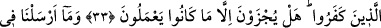

SEN O ZÂLİMLERİ
RABLERİNİN HUZURUNDA
BİR GÖRSEN!
31. Kâfir olanlar dediler ki: Biz hiçbir zaman bu Kur’an’a ve bundan önce gelen
kitaplara inanmayacağız. Sen o zâlimleri, Rablerinin huzurunda tutuklanmış,
birbirlerine söz atarlarken bir görsen! Zayıf sayılanlar, büyüklük taslayanlara: Siz
olmasaydınız, elbette biz inanan insanlar olurduk, derler.
32. Büyüklük taslayanlar, zayıf sayılanlara (kıyâmet gününde): Size hidayet
geldikten sonra sizi ondan biz mi çevirdik? Bilakis siz suç işliyordunuz, derler.
33. Zayıf sayılanlar da büyüklük taslayanlara: Hayır! Gece gündüz (işiniz) tuzak
kurmaktı. Çünkü siz daima Allah’ı inkâr etmemizi, O’na ortaklar koşmamızı bize
emrederdiniz, derler. Artık azabı gördüklerinde, için için yanarlar; biz de o inkâr
edenlerin boyunlarına demir halkalar takarız. Onlar ancak yapmakta oldukları
günahları yüzünden cezalandırılırlar.
34. Biz hangi ülkeye bir uyarıcı göndermişsek mutlaka oranın varlıklı ve şımarık
kişileri: Biz, size gönderilmiş olan şeyi inkâr ediyoruz, demişlerdir.
35. Ve dediler ki: Biz malca ve evlâtça daha çoğuz, biz azaba uğratılacak da
değiliz.
36. De ki: Rabbim, dilediğine bol rızık verir ve (dilediğinden) kısar; fakat